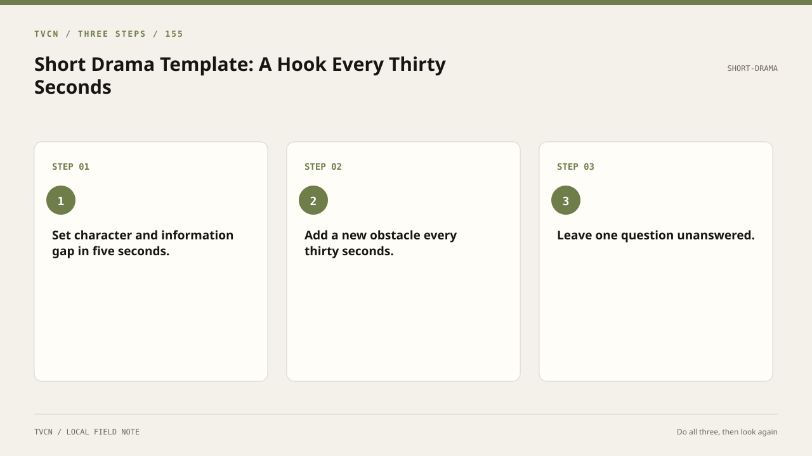

A usable 60-second segment table
| Segment | Time | Picture | Sound / pass line |
|---|---|---|---|
| Information gap | 0–5s | The audience knows something a character does not | One piece of information; no full backstory |
| New obstacle | 5–20s | The character acts on the wrong information and meets the first consequence | Action and reaction; no new character rescue |
| Escalation | 20–35s | The same misunderstanding costs more | One cost line; the character must choose |
| New price | 35–50s | The choice lands; relationship or position changes | Do not explain right or wrong; let the result speak |
| Open question | 50–60s | Stop on an action or an unfinished line | The question has evidence in the previous minute |
Fill three lines before rolling
- Gap: who does not know what, and when does the audience know?
- Price: what is lost at each escalation? Not just “more angry.”
- Final question: what will they ask? The answer must be in the previous minute.
On set
Information gap at 0 to 5, new obstacle at 5 to 35, new cost at 35 to 60. End each beat with a question.
DIAGRAM / Short drama
Three-step flow

Do this
A short-drama template hooks every thirty seconds: new information, new obstacle, new cost.
- 0–5 seconds establish an information gap.
- 5–35 seconds add a new obstacle.
- 35–60 seconds add a new cost and end on a question.
Avoid
Do not rescue every segment with a new character; if the person does not change, the hook is fake.
Image note. Covers, diagrams and step images on this page are editorial illustrations or structure diagrams, not photographs of a test performed here; they are not evidence of measured gear performance. Where an image is AI-assisted, the caption says so. Read the test conditions in the text before treating an image as proof.